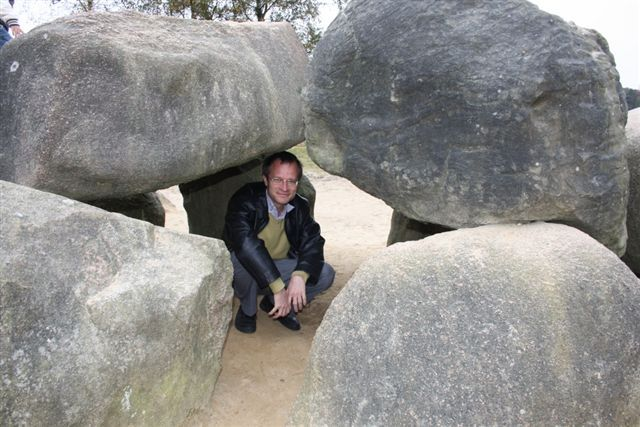

HoogeveenIk heb aan het Unive chess toernooi meegedaan van 19 oktober tot en met 27 oktober. Het is een erg leuk toernooi want er is gratis koffie, thee en chocolademelk. Ik ging elke dag heen en weer met de trein van Groningen naar Hoogeveen. Dat is maar goed ook, er zijn niet zoveel normale hotellen daar. Als dit het hotel van Tiviakov is, slaap ik liever thuis. Ronde 9. IM Henk Vedder - Ik Ik speelde prut en ik verloor 1 - 0. Uiteindelijk wel trevreden met mijn toernooi, ik ben ongeveer 50 punten gestegen door dit toernooi. Ronde 8. Ik - WGM Alina L'Ami Ik kwam erg slecht uit de opening, maar ze dacht heel lang na. Rond zet 25 kwam ze in tijdnood en maakte ze een fout waardoor het gelijk kwam te staan, daarna maakte ze nog een fout waardoor ik een kwaliteit kon winnen. Ik miste het en we kwamen in een remise eindspel.  Ik speelde hier 31. Tb4, Ik had 31.Pb4 moeten spelen. Na 32. ... Pd2 komt 33. Lc4 en wit wint een kwaliteit en waarschijnlijk ook de partij. 1/2 - 1/2 Ronde 7. IM Michiel De Jong - Ik Ik verloor heel snel na de opening door een aanval. Ik had hem niet aan zien komen. Ik baalde best erg. 1 - 0 Ronde 6. Ik - GM Nils Grandelius Vandaag moest ik tegen een grootmeester! Ik had me erg goed voorbereid. Ik wist dat ik weinig kans maakte maar ik werd heel blij toen hij een kleine kwaliteit weggaf; daarna speelde ik heel goed door maar ik maakte 1 fout en daarna stond ik nog maar iets beter. Hij bood remise aan en dat accepteerde ik. 1/2 - 1/2  13. ... Tfc8 14. Txc6 Dxd2 15.Pxd2 Txc6 16.Lxg4 +- Ronde 5. Menno Okkes - Ik Er kwam Konings Indisch op het bord en hij miste een bekende truuk, het werd nog spanend want hij had nog compensatie maar Menno maakte nog een fout waardoor er een geforceerde mat op het bord kwam. 0-1  16.Re1? Wit had Txa8 moeten spelen met een betere stelling. 16. ... c5 17.Rxa8 Qxa8 18.Bxc5 dxc5 met een stuk meer. Ronde 4. Ik - Linus Johansson We speelden Dame-Indisch, maar hij speelde heel passief, ik stond na een tijdje beter en daarna begroef hij zichzelf. Hij kon niks meer doen. Daarna bood hij remise aan en nam ik dat aan. Ik had dat niet aan moeten nemen maar toch deed ik het, als ik verder speelde won ik misschien. 1/2 - 1/2  Hier speelde ik 21.Qd4 en na 21. ... Bc5 nam ik remise aan. In plaats van 21.Qd4 had ik 21.Rb3 moeten doen. De dreiging die zwart had was 21. ... Qc5, na 21. Rb3 Qc5 komt 22. Qf3. Na 22. ... Qxa5 komt 23.Rxa3 Qb6 en 24.Qb3  Met de dreiging 25. Qxb6 en Rxa6, na 24. ... Bb7 komt 25. Rb1 met pionwinst en een goed eindspel. Ronde 3. Jonathan Grand - Ik Wit speelde Engels en na de opening stond ik prima, daarna miste hij een moeilijk te zien truukje. Ik won een pion maar hij gaf nog 2 pionnnen weg voor wat aanval. Hij gaf nog een kwaliteit in tijdnood weg om een nog onbekende reden. Daarna won ik nog een paard en er werd opgegeven 0 - 1  13. ... Qc8, dreigt 14. ...Bxh3 en 14. ...Nxd4 15.Bxd4 Qxc4 Ronde 2. Ik - Dick Stavast Vandaag had ik wit en ik speelde Spaans. ik kwam prima uit de opening, in het middenspel gaf hij een pion weg en ik wikkelde af naar een gewonnen eindspel. Ik had een vrije a pion en beide 3 pionnen aan de koningsvleugel. Ik speelde het niet goed en de stelling werd remise. Maar hij verspilde die kans en ik kon promoveren en won dus. 1 - 0  50. ... Kd7 Dit was de verliezende zet, remise zou 50. ... gxf3 zijn. 51. fxg4! Bxg2 52.Ne2 1-0 Ronde 1. Enrico BoomBout - Ik Ik had zwart, dat had een voordeel en een nadeel. Het nadeel was dat ik 5 keer zwart zou krijgen en 4 keer wit. En het voordeel was dat ik niet hoefde voor te bereiden wat ook niet kan in de eerste ronde. Ik speelde Sveshnikov en het kwam al snel gelijk te staan. Ik ruilde een paar lopers en de paarden. Toen kwamen we in een middenspel met ongelijke lopers, waar ik een fout maakte waardoor hij mij mat kon zetten. 1 - 0 Hier sta ik iets beter als ik e3 doe. Wit moet slaan met fxe3 en ik doe Qb6 met een iets betere stelling.  24. ...g6?! 25. Bxe4 Qb6 26. Rh3 Kg7? 27. Rxh7+! 1-0. Op 27. ...Kxg7 volgt 28.Qh5 en Qxg6 met mat. |